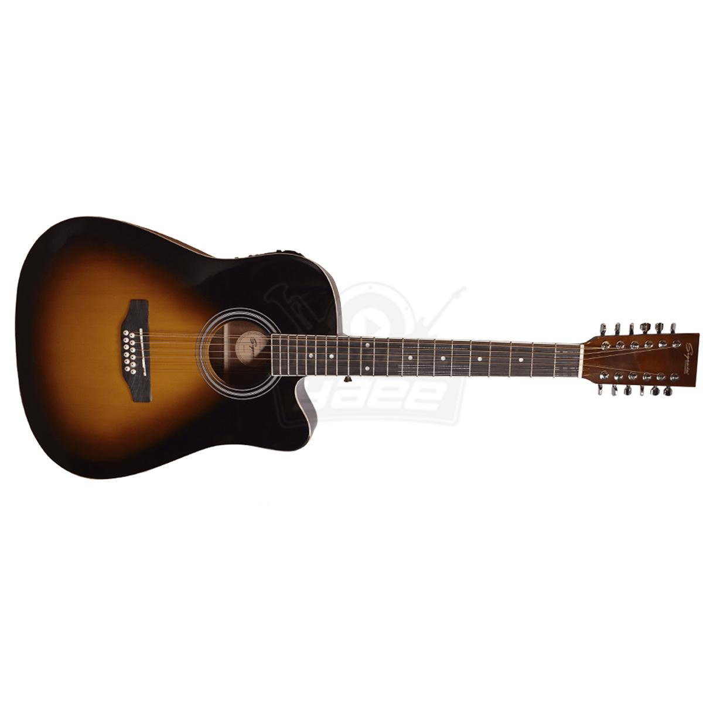

Inicios
Origen del requinteo en los corridos
El requinto como solo instrumental en los corridos tiene influencia de:
- La tradición huapanguera y huasteca (donde el requinto ya era usado para adornar las melodías).
- Los boleros y tríos románticos (con su técnica de punteo melódico).
- La música norteña clásica (donde el acordeón ya hacía solos, pero la guitarra empezó a ganar protagonismo).
Por lo regular se toca en un instrumento llamado guitarra docerola:
